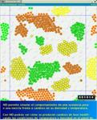

MOLECULAR DYNAMICS IN 2D

Technical specifications
Experiments in one-component systems:
Attractive forces and condensed phases
:
Crystal solid-fluid transition
Experiments in binay mixtures
Demixing in two phases with different composition
Liquid-vapor and solid-vapor equilibrium in immiscible mixtures
Experiments in ternary mixtures
(3 components)
Demixing in three phases with different composition (diffusion)
Experiments in confinement
Precipitation and wetting